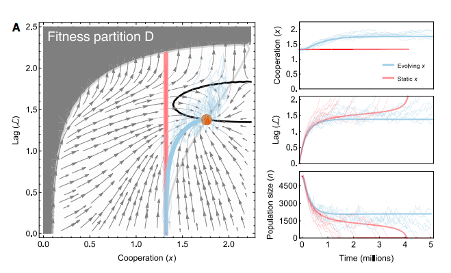
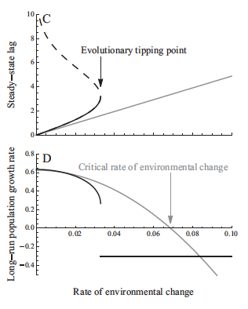
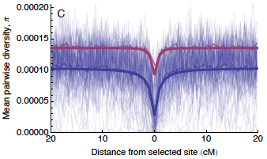
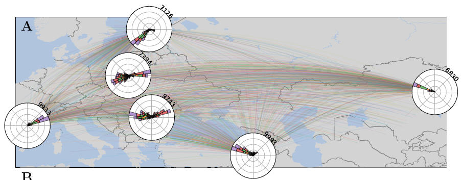

We use mathematics to investigate ecological and evolutionary processes, typically at the population level.
The main focus so far has been evolutionary rescue, where a declining population is "rescued" from extinction by sufficiently rapid evolution.
An emerging focus is spatial population genetics, specifically using tree sequences to infer how alleles, individuals, and populations have moved across the landscape to get to where they are today.
One of the great things about theory is that we get to work on many interesting topics, which have included speciation, sex chromosomes, metabolic scaling theory, epistasis, and sexual selection.
For a list of papers, please see publications.
We use mathematics to investigate ecological and evolutionary processes, typically at the population level.
The main focus so far has been evolutionary rescue, where a declining population is "rescued" from extinction by sufficiently rapid evolution.
An emerging focus is spatial population genetics, specifically using tree sequences to infer how alleles, individuals, and populations have moved across the landscape to get to where they are today.
One of the great things about theory is that we get to work on many interesting topics, which have included speciation, sex chromosomes, metabolic scaling theory, epistasis, and sexual selection.
For a list of papers, please see publications.
Evolutionary rescue
When populations are declining due to environmental change, it is sometimes possible for sufficiently fast evolution to revert this decline and "rescue" populations from extinction. This process is especially important in the context of human disturbance and climate change (where we want rescue to happen) and the evolution of drug resistance (where we don't want rescue to happen). Our work has so far focused on three areas:

1. Interactions
Interactions between individuals affect both demography and evolution, and therefore can have important impacts on whether rescue occurs or not. Using mathematical models we have explored how competition (Osmond & de Mazancourt 2013), predation (Osmond, Otto, Klausmeier 2018), and cooperation (Henriques & Osmond 2020) affect rescue. In all three cases there are scenarios where the species interaction can either help or hinder rescue from occurring. Exciting next steps include models of mutualisms and more complex food webs.

2. Fitness functions
An important assumption in many mathematical models of evolution is how the trait value of an individual translates to fitness (we call this translation a "fitness function"). Nearly all models of rescue (and beyond) assume fitness functions are Gaussian (i.e., like a normal distribution). In Osmond & Klausmeier 2018 (and reviewed in Klausmeier et al 2020) we have shown that even small changes to this ubiquitous assumption can lead to very different predictions for rescue: in gradually changing environments sometimes populations can become so maladapted that the strength of selection actually begins to decline, causing adaptation to slow down, which leads to a tipping point where seemingly OK populations suddenly go extinct. It might next be fun to predict if real fitness functions lead to tipping points...

3. Genetics
Most models of rescue focus on predicting whether rescue will occur or not. We have extended this theoretical work by asking, given rescue occurs, i) how many mutations of what size are expected to have occured (Osmond, Otto, Martin 2020)? and ii) can we infer that rescue has occured from contemporary genomic data (Osmond & Coop 2020)? We have just scratched the surface of research in this area: exciting next steps include models of multi-step rescue with recombination and the signatures of highly polygenic rescue.
Spatial population genetics
 Present-day genetic patterns have been shaped by the geographic movements of ancestors. This implies that one can describe aspects of the past movement of individuals from information contained in contemporary genomes. Previous attempts at this inference problem have focused on non-recombining sequences or summary statistics that capture either deep or recent timescales. Cutting-edge computational methods are now available to infer genome-wide gene genealogies along recombining genomes, which contain an incredible amount of information and naturally incorporate both long and short timescales. Our recent work (Osmond & Coop 2021) shows how such "tree sequences" can be used to infer the effective rate of dispersal and the locations of a sample's genetic ancestors at any time in the past, under the assumption of random dispersal in continuous space. There are many exciting extensions here, such as incorporating ancient genomes, tracking specific groups of loci (eg, from GWAS), allowing for variation in dispersal rates across lineages, and accounting for selection.